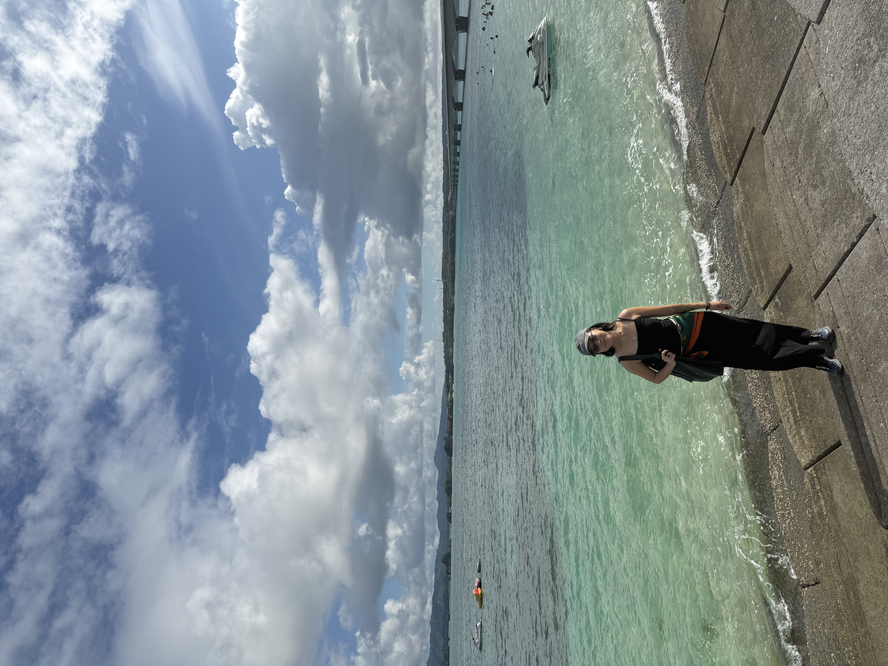
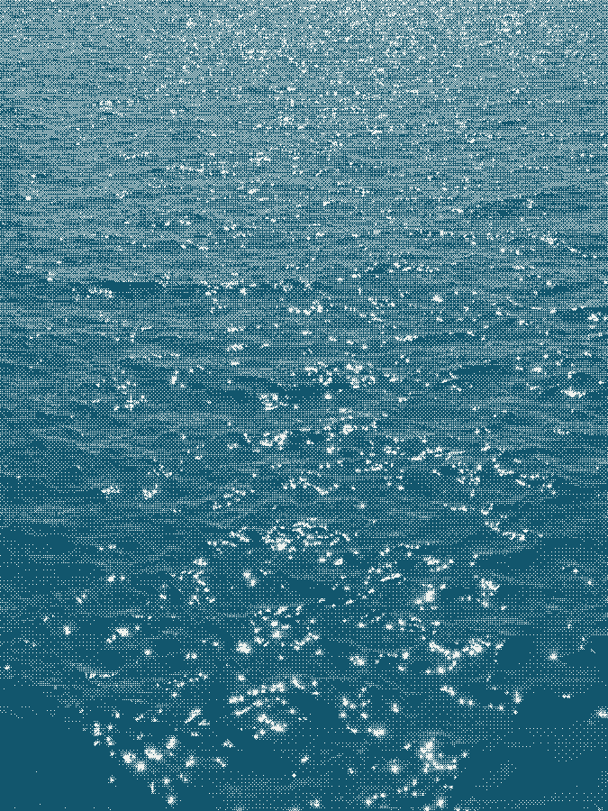

Yi Hui is an internet surfer and gardener, reader, writer, artist, creator, tech worker, dreamer, lover of life, and more.
I try to stay close to wonder and move through life with curiosity. I don’t think it’s a naive way to live, because it’s the most honest way to be alive. My simplest pleasures are taking a walk, being by the ocean, and Frieren.
I’m exploring the intersection between art, design, and technology. Shaped by years of internet culture and subculture, my relationship with the internet is what drives my interest in building an internet that’s more alive.

I was never a quiet and reserved child, but school ruined it for me. I didn’t have a place that I feel like I belonged, so I made the internet my home. I became an internet native. Some of my early internet rabbit holes were FanFiction, DeviantArt, Blogger, Tumblr, and even built my own fan website. It was my refuge at first, then it became a place to express myself more freely and as authentic as I can be in my adolescence.
I want to continue the era of “surfing the internet” when we weren’t absorbed with algorithms, metrics, and “content”.
I’m continuously growing this internet space into somewhere comfy that I can return to anytime, hopefully inspiring others to create their own. And to contribute in building the internet that I want to see more of – something cosier, softer, more thoughtful, more alive.
“Do I contradict myself? Very well then I contradict myself. I am large, I contain multitudes.” – Walt Whitman
I like lists, so here are some lists of my favourites. Most of them are my influences too, shaping some of my thoughts and values and who I am today.